Entresuelo Altabix
Una operación de Cambio de Uso con la viabilidad cerrada y certificada, la demanda medida dos veces sobre el terreno y un equipo que la ejecuta de principio a fin.
Metodología propia repartida en 3 fases —
GO→
MAP→
ÉXITO — y un objetivo claro: pasar de la viabilidad al beneficio real.
Sin improvisar. Sin sorpresas.
Tres perfiles diferentes. Mismos estándares.
Un objetivo: el Resultado.
Esto no va solo de un método — va de un equipo humano completo, encajado como un puzzle: tres energías que se complementan.
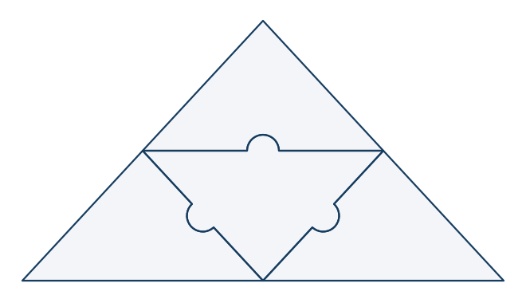
RESULTADO ESPÍRITU MENTE CORAZÓN XaviVisión
XaviVisiónLa toma de tierra del proyecto. El cerebro analítico que estudia cada camino y elige el mejor; números y documentos reales, sin suposiciones. Hace controlables las variables que no lo parecen.
La visión creativa del proyecto: leer hacia dónde va el mercado y qué necesita. Marketing y claridad para convertir la idea en algo palpable — y la IA como palanca para escalar al siguiente nivel.
La acción: ejecuta la obra y la parte técnico-jurídica. Sabe qué toca en cada gestión y con cada ente oficial. Mucho oficio de obra; cercano, resuelve y suma. Pieza clave.
Lo que ya hemos hecho — la prueba antes de la promesa
No hablamos en futuro: tenemos operaciones cerradas y en marcha que demuestran que el método llega hasta el resultado real. Estos son los números.
Cambio de uso (local → viviendas)
| Operación | Inversión | Venta | Rentabilidad | Anualizada | Estado |
|---|---|---|---|---|---|
| CdU · 2 viviendas · C/ Diego Fuentes Serrano (Elche) | 140.000 € | 220.000 € | ROI 57% | 68% anual | Finalizada · Hilo en Discord |
| CdU · 4 viviendas · C/ Capitán Alfonso Vives (Elche) | 330.000 € | 473.000 € | ROI 52% | 48% anual | Finalizada (pendiente de cierre) |
| CdU · 13 viviendas · C/ Alcalde Mariano Beviá 12-14 (San Vicente del Raspeig) | 930.000 € | 1.640.000 € | ROI 76% | 38% anual | En fase final |
| CdU · 1 vivienda · C/ Fossar 15 (Elche, Raval) | 160.000 € | 220.000 € | ROI 37,5% | 45% anual | Finalizada |
Comprar, aportar valor y vender
| Operación | Inversión | Venta | Rentabilidad | Anualizada (plazo) | Estado |
|---|---|---|---|---|---|
| C/AV/V · Tríplex · C/ Boquera Calvarí (Crevillente) | 149.026 € | 185.000 € | ROI 24% · ROE 45,5% | 27,4% anual (10,5 meses) | Finalizada · Hilo en Discord |
| C/AV/V · Piso · C/ Juan Ramón Jiménez (Elche) | 45.000 € | 118.000 € | ROI 44% | 53% anual (10 meses) | Finalizada · Detalles en el perfil del gestor |
| C/AV/V · Piso · C/ Bahamas (Orihuela Costa) | 38.480 € | 76.500 € | ROI 60% | 144% anual (5 meses) | Finalizada · Detalles en el perfil del gestor |
| C/AV/V · Piso · Av. Alcalde Ramón Pastor 12 (Elche) | 216.000 € | 270.000 € | ROI 25% | 49,9% anual | Finalizada · Hilo en Discord |
| C/AV/V · Piso · C/ Churruca, La Veleta (Torrevieja) | 65.836 € | Objetivo ~145.000 € | ROI objetivo ~120% | — | En venta |
Comprar, aportar valor y alquilar
| Operación | Inversión | Renta mensual | Notas | Estado |
|---|---|---|---|---|
| C/AV/A · Dúplex · C/ Joan Maragall (Sant Pere de Ribes, Barcelona) | ~167.000 € | 830 €/mes | Rentabilidad infinita — operación financiada al 100%, sin capital propio inmovilizado · Valor potencial de venta ~255.000 € | Alquilada |
El diagnóstico de viabilidad
Antes de mover capital, comprobamos que la operación se puede hacer. Aquí está lo que medimos en el mercado, el activo del que partimos y los cuatro ejes que la sostienen — con el Informe de Diagnóstico como prueba.
El mercado, medido — no opinado
Todo empieza por una pregunta: ¿hay demanda real para el producto que vamos a crear? La medimos con datos, no con intuición.
El precio de salida lo afinamos en la Fase 2; aquí basta una estimación orientativa apoyada en datos reales de mercado, que confirma que hay recorrido para el producto que vamos a crear.
El activo del que partimos
El problema: Altabix es el barrio residencial de mayor crecimiento de Elche, pegado al campus de la UMH —a apenas 300 m en línea recta— y con fuerte componente universitario: una demanda de vivienda que no encuentra oferta suficiente, con solo 14 pisos comparables en venta frente a 326 anuncios de alquiler activos en la misma zona. Ahí mismo hay dos locales comerciales en planta baja/entresuelo, hoy infrautilizados, mientras el mercado real —verificado con 5 inmobiliarias de la zona (130.000-169.000 €) y 6 testigos del MTVV (139.000-199.000 €)— pide vivienda reformada de 2 dormitorios, lista para entrar. El barrio mueve entre 60 y 90 compraventas al año, y el comprador real —parejas jóvenes, primeros compradores, estudiantes y personal universitario, verificado en campo— compite hoy por un parque de vivienda mayoritariamente sin reformar. El problema, por tanto, no es de demanda ni de localización: es la falta de producto adecuado en el punto exacto donde el mercado lo pide.
La aportación de valor: La operación transforma dos locales comerciales en dos viviendas de 2 dormitorios mediante cambio de uso, agrupación/segregación registral y reforma integral, con los dos accesos independientes y la fachada propia de cada unidad ya confirmados en visita técnica (27/08/2026). La reforma resuelve, sin tocar la estructura, la única limitación técnica real —la altura libre actual de ≈2,50 m, recuperable a ≈2,55-2,56 m acabados retirando el relleno y la solera existente— y aprovecha que cada vivienda cuenta ya con contador individual de agua y electricidad, sin necesidad de nueva acometida. El resultado es el producto que hoy falta en Altabix: vivienda reformada y lista para entrar, con la Vivienda 1 (2 dormitorios, 1 baño) y la Vivienda 2 (2 dormitorios, 2 baños), planificadas con un Gantt de obra de 11 capítulos y 16 semanas. El valor no se crea comprando barato, sino cerrando la distancia entre lo que hay hoy (local comercial) y lo que el comprador de la zona busca y no encuentra (vivienda habitual reformada).
Dónde está — y por qué importa
| Punto de interés | Distancia |
|---|---|
| Supermercado (Consum) | 58 m |
| Colegio CEIP Víctor Pradera | 189 m |
| Centro de Salud de Altabix (urgencias) | 385 m |
| Universidad Miguel Hernández (UMH) | 300 m al campus · 2 min en coche |
| Hospital General Universitario de Elche | 1,1 km · 3 min en coche |
Estado original

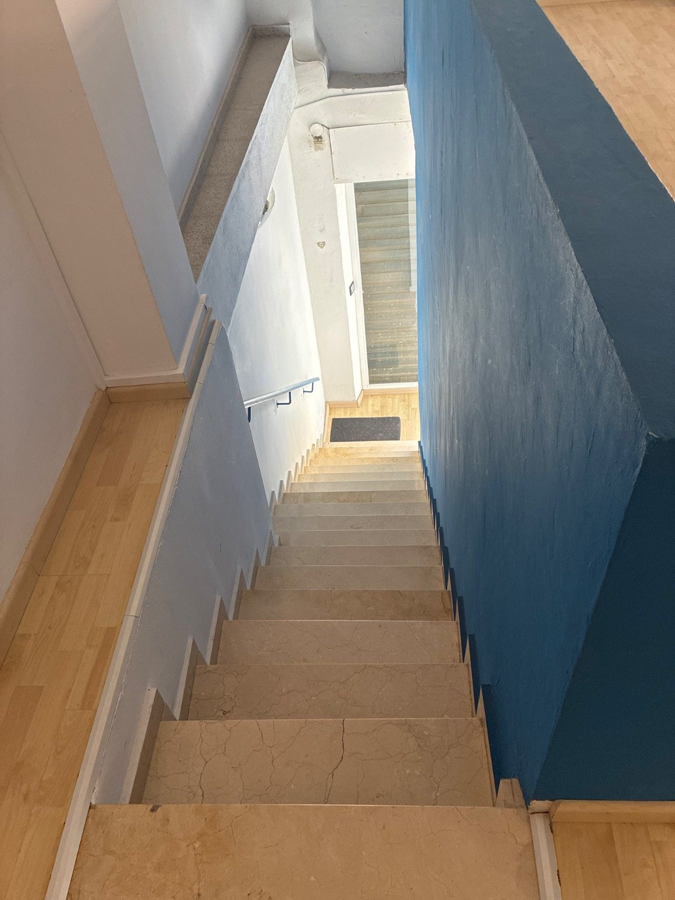
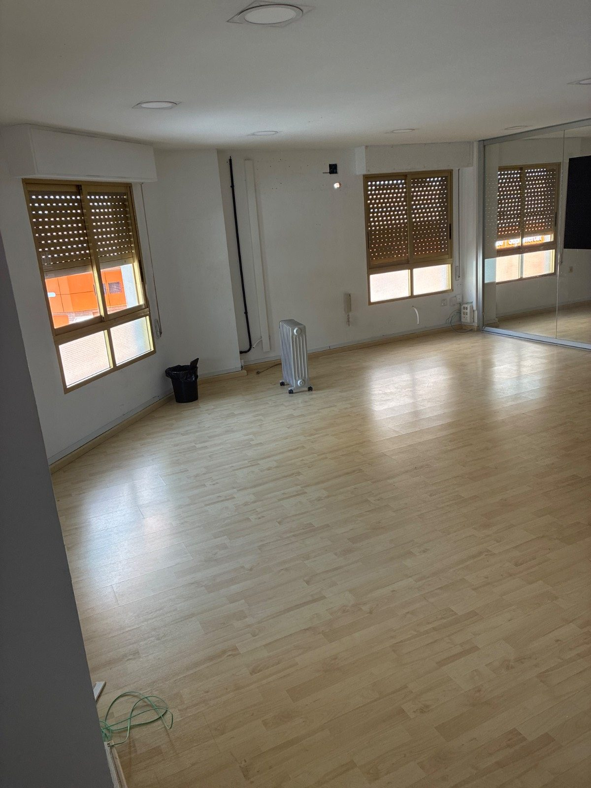
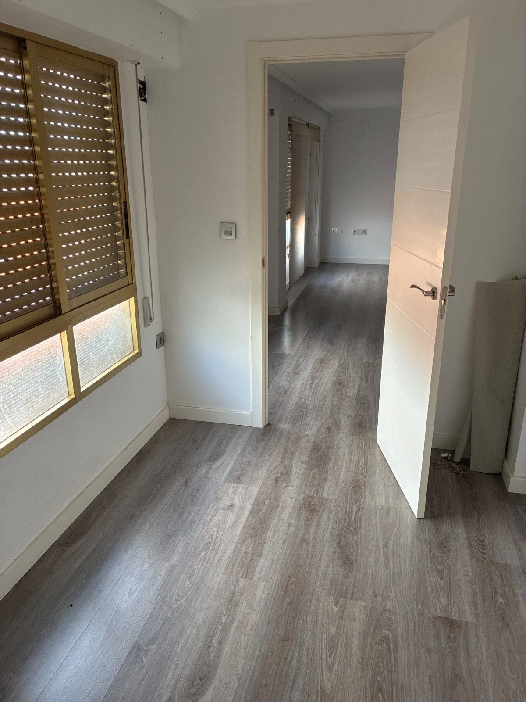

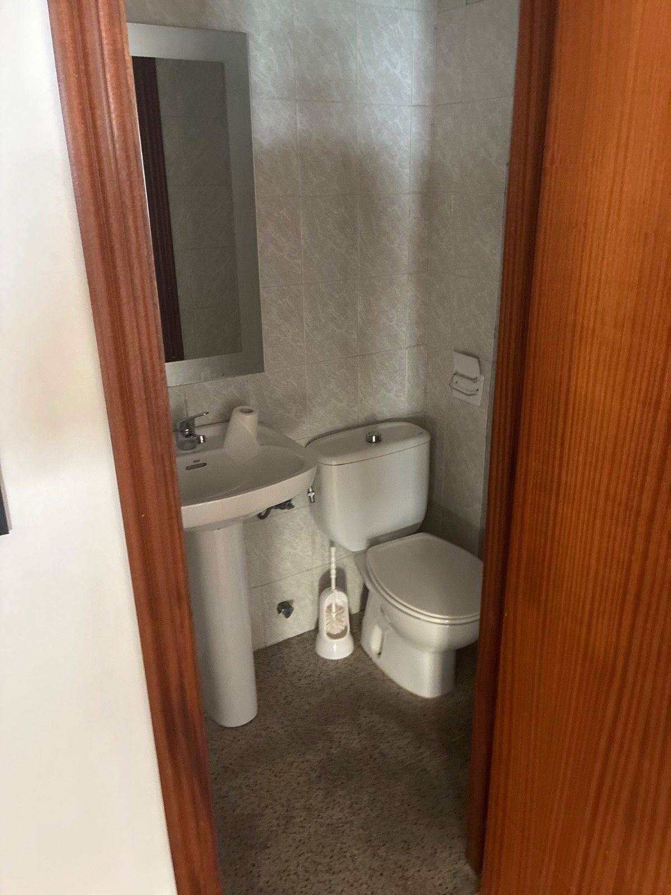


¿Es viable este cambio de uso?
El veredicto, sin ruleta
La Fase 1 valida cuatro ejes — y si uno falla, falla todo: jurídico/registral, urbanístico, técnico y económico. Se obtiene un veredicto claro (GO / GO con ajustes / NO GO) antes de comprometer un euro.
Tres ejes avanzan, uno pendiente de cierre
A fecha de hoy no se pueden dar por cerrados los cuatro ejes: el encaje técnico está confirmado, pero el CCU sigue sin conceder (la funcionaria responsable del Ayuntamiento de Elche está de baja), la superficie del activo aparecía con tres lecturas distintas y el precio de venta superaba el escenario optimista de la segunda fuente de mercado. Veredicto: GO condicionado al cierre de estos tres puntos.
Desde entonces, dos de los tres han quedado aclarados. La superficie no tenía tres lecturas contradictorias sino tres magnitudes distintas: 127,05 m² útiles y 131 m² construidos son la superficie del activo, los 144 m² del presupuesto son superficie de intervención de obra, y los 120 m² del MTVV son el redondeo de su unidad de referencia. El precio se explica en la sección de mercado: el informe de la segunda fuente no tiene comparables de vivienda a estrenar, y sitúa este producto entre el suelo del mercado usado y el techo de la obra nueva — que es justo donde está. Queda abierto el CCU, con la mitigación que se detalla en los riesgos.
El informe de viabilidad
Todo el diagnóstico, en un solo documento.
Ver Informe de Diagnóstico · Fase 1Y la documentación con la que verificamos cada eje, como prueba de que está respaldado:
El plan ejecutable
La viabilidad abre la puerta; la ejecución decide el resultado. Aquí convertimos el "sí" en un plan: el encaje técnico al detalle, los suministros, los números por partidas, los escenarios, los riesgos y el calendario de obra.
El mapa del cambio de uso: del «sí, es viable» al plan que ejecuta la obra
La viabilidad abre la puerta. La ejecución decide el resultado.
La Fase 1 respondió a una pregunta: «¿es viable este cambio de uso?». La Fase 2 no responde otra — dibuja el mapa. Traza el camino completo: qué hacer, en qué orden y qué pedir a quién en cada trámite, para que la obra arranque sin bloqueos ni sorpresas.
Cambio de uso, agrupación y segregación registral contemplados y presupuestados (AJD específico para cada trámite). El informe de encaje técnico está confirmado; queda pendiente la concesión del Certificado de Compatibilidad Urbanística (CCU) por el Ayuntamiento de Elche.
El Certificado de Compatibilidad Urbanística (CCU) está en trámite ante el Ayuntamiento de Elche; el expediente está actualmente bloqueado porque la funcionaria responsable se encuentra de baja. La licencia de obras todavía no se ha presentado.
Los dos locales objeto de la operación nunca han tenido calificación de vivienda de protección oficial: son locales comerciales en planta baja/entresuelo, por lo que el régimen de VPO no aplica a esta operación y el precio de venta es libre por naturaleza del activo, no por certificado. Lo que sí queda pendiente de reunir es la documentación de la comunidad de propietarios: no se han localizado las normas o estatutos que autoricen expresamente la agrupación, segregación y cambio de uso de los locales a vivienda. Existen las actas de la derrama aprobada por la comunidad, pero no está confirmado que ese documento equivalga a la conformidad estatutaria que exige el cambio de uso. Este extremo —normas/estatutos de la comunidad, o la confirmación de que las actas de derrama cubren el mismo alcance— sigue abierto y debe cerrarse antes de dar por completada la vía jurídica de la operación.
El mapa antes de la obra
Qué hacer, en qué orden y por qué — cada paso con su documento sobre la mesa. Cuando la obra empieza, no se improvisa: se ejecuta.
El producto final (visualización · piso piloto)
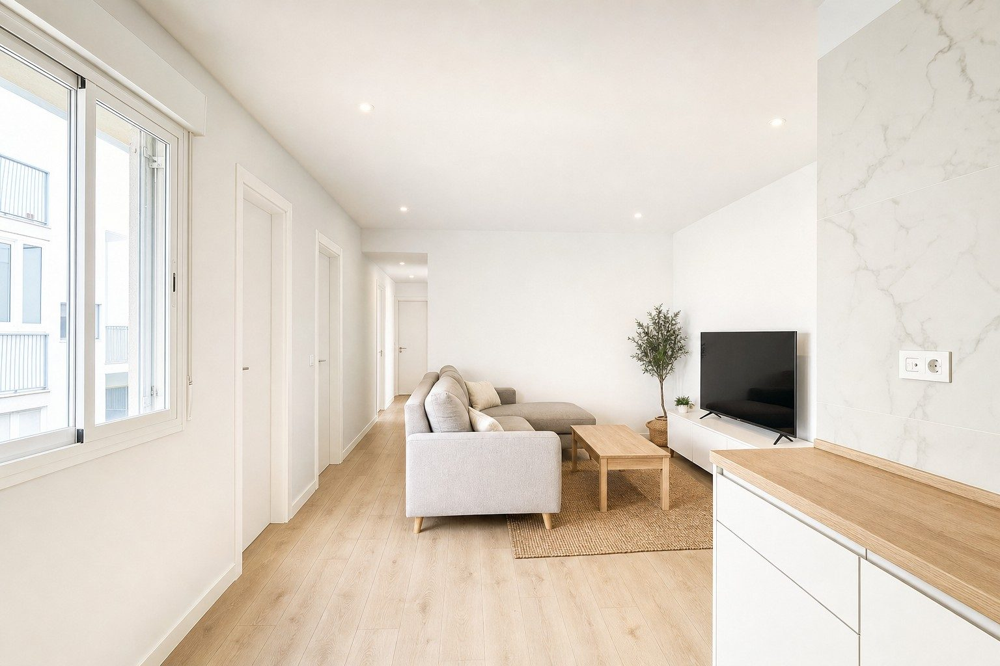

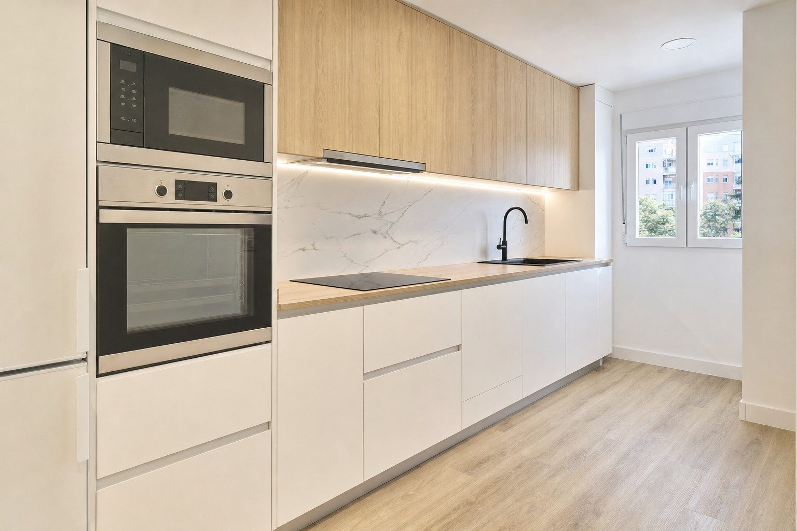

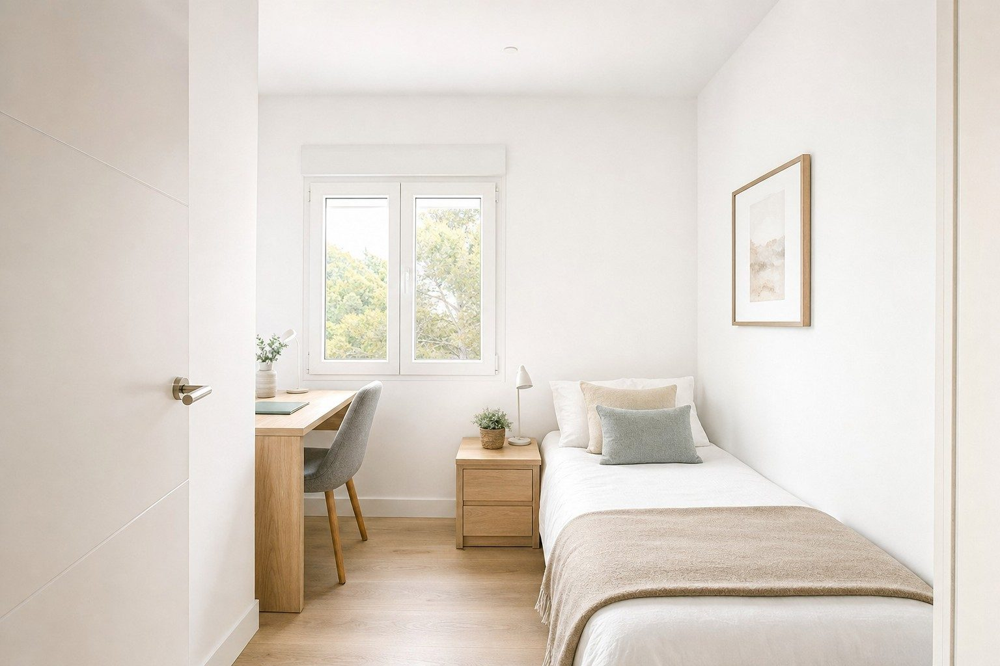
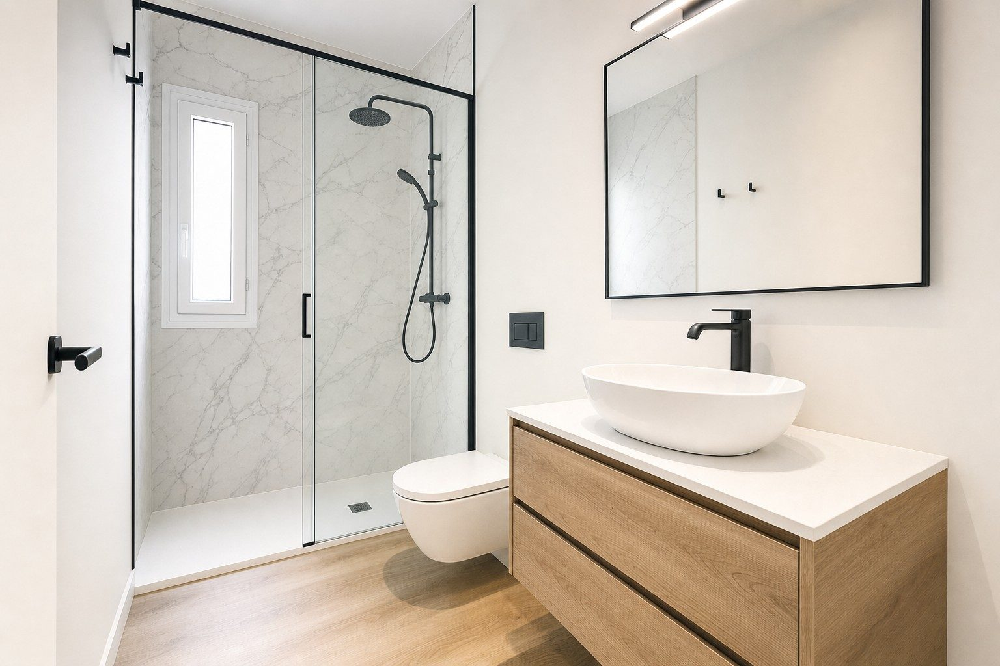
Agua y luz: previstos y presupuestados
Los suministros son una de las sorpresas clásicas de un cambio de uso. Por eso van en el plan, no en la obra.
Cada vivienda dispone ya de contador individual de agua y electricidad; no se prevé nueva batería de contadores ni nuevos puntos de suministro, lo que reduce la incertidumbre técnica y económica de esta partida. Sigue sin existir un presupuesto formal de agua en PDF — solo hay tres fotografías de los contadores existentes, pendientes de solicitar los presupuestos formales a las compañías.
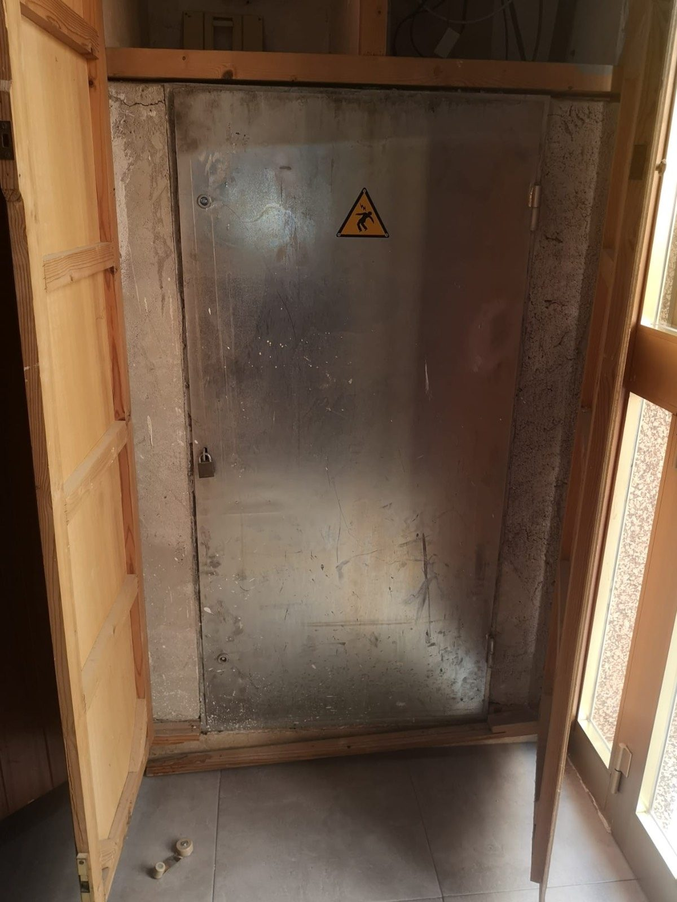
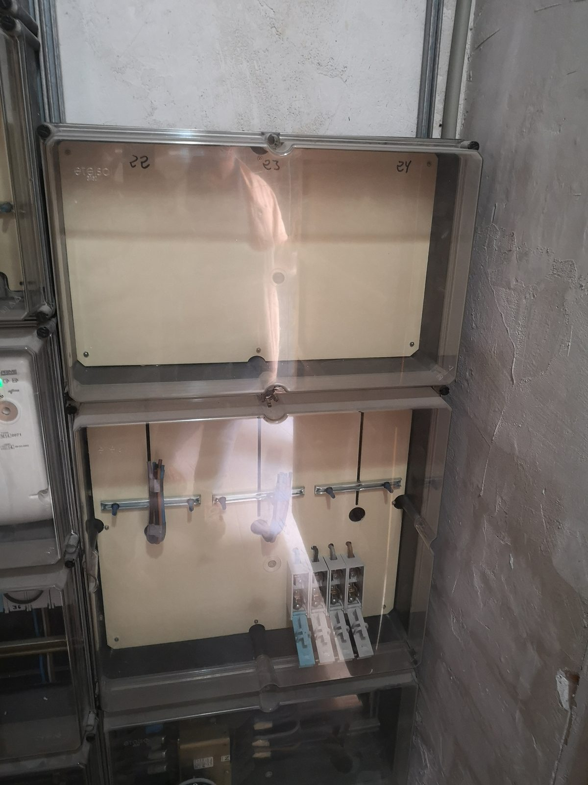

La inversión, de un vistazo
El cuadro de siempre, con las cifras de esta operación. Debajo, el desglose partida a partida.
| GESTOR | INVERSOR | LA INVERSIÓN EN CONJUNTO | |
|---|---|---|---|
| Aportación € | 34.489 € | 225.000 € | 259.489 € |
| Aportación % | 13,29 % | 86,71 % | 100 % |
| Beneficio € | 7.032 € | 45.879 € | 52.911 € |
| Beneficio % | 13,29 % | 86,71 % | 100 % |
| Rentabilidad Neta | 20,39 % | 20,39 % | 20,39 % |
| Rentabilidad ANUALIZADA | 20,39 % | 20,39 % | 20,39 % |
El capital rinde lo mismo para todos. El gestor entra con su propio dinero y cobra por él exactamente el mismo porcentaje que cualquier inversor: no hay clases de capital ni comisión sobre vuestro beneficio. La única asimetría está en el bonus, que solo aparece si vendemos por encima de 325.000 € — y nunca resta, solo suma.
Escenario realista. La rentabilidad anualizada se calcula sobre los 12 meses que fija el contrato de cuentas en participación, con fecha objetivo de finalización el 15 de octubre de 2027.
Los números, partida a partida
En el diagnóstico de la Fase 1 confirmamos que los números de la operación cuadraban. Aquí los llevamos al detalle: el desglose fino, partida a partida, con la cifra exacta de cada una.
| Partida | Importe (cálculo cerrado · 3 presupuestos contrastados) |
|---|---|
| Compra de los 2 locales | 110.000 € |
| ITP (9%) + notaría + registro + gestoría | 11.700 € |
| AJD (cambio de uso + agrupación + segregación) | 4.258,58 € |
| comisión de API (intermediación en la compra) | 12.100 € |
| honorarios técnicos | 5.227,20 € |
| ICIO (2,7%) | 744,45 € |
| reforma (presupuesto SPM V3, con IVA) | 108.028,80 € |
| otros gastos de reforma (limpieza, certificados ECUV, salida de humos) | 4.938,06 € |
| gastos varios hasta la venta (seguro de RC de obra, alarma, cuotas de comunidad, agua, luz e IBI) | 1.492 € |
| imprevistos | 1.000 € |
| INVERSIÓN TOTAL DE LA OPERACIÓN | 259.489,09 € |
Cálculo prudente sobre 3 presupuestos contrastados. En la estructura de inversión verás el reparto del capital.
El precio, confirmado por tres motores
En la Fase 1 mostramos un resumen del análisis IM·PULSO. Aquí está el informe completo: cruza tres motores de valoración independientes — el motor IM·PULSO (datos masivos de mercado), el portal del notariado (precios reales de escritura) y el MTVV · Método Total de Valoración de Vivienda del estudio inicial. Más profundidad y más cruce, mismo resultado: las tres vías convergen en 155.000–170.000 € por unidad, en línea con el paso 4.
📈 Ver informe completo IM·PULSO · 3 motores cruzadosDos escenarios
El escenario que contamos es el realista, fijado sobre suelos validados varias veces — situado en la franja alta de ese rango ya validado. El optimista es el techo razonable.
| Realista (el que contamos) | Optimista | |
|---|---|---|
| Quién compra | Parejas jóvenes, primeros compradores y personas solas, verificado en la comercialización real (6 contactos telefónicos en 6 días), atraídos por la reforma integral y la ubicación | Target más amplio del barrio: 86-89% comprador nacional, familias de tamaño medio, estudiantes y empleados públicos/docentes/investigadores; uso mayoritario como vivienda habitual (65-75%), con una franja de alquiler a jóvenes (15-20%) e inversión pequeña (5-10%) |
| Venta 2 unidades | 325.000 € (155.000+170.000) | pendiente (pendiente) |
| Beneficio (tras servicer 12.000 €) | 52.911 € | pendiente |
| Rentabilidad del capital | 20,39% | pendiente + bonus * |
El capital rinde el mismo porcentaje para gestor e inversores por igual. * Vender por encima de 325.000 € activa el bonus — una capa aparte que se suma a tu rentabilidad (ver «La propuesta»).
Los riesgos: los que cerramos y los que vigilamos
No te vamos a decir que esta operación no tiene riesgos. Tiene cinco, y aquí están los cinco: qué son, cuánto pesan y qué hacemos con cada uno. El más relevante es el certificado urbanístico, que sigue en trámite por un retraso del Ayuntamiento — y su mitigación es la más importante que puedes leer en este documento: si no se obtuviera, la aportación se devuelve íntegra.
| Riesgo | Estado | P×I | Mitigación |
|---|---|---|---|
| Presupuesto de obra con validez vencida | 🟡 VIGILADO | 6 · Bajo | El presupuesto de SPM conserva impresa la validez de mayo de 2026, aunque su contenido ya está actualizado a los metros reales. Se pide su reemisión con fecha nueva antes de contratar la obra, de modo que el importe quede confirmado por escrito por el constructor. |
| Superficie del activo entre fuentes distintas | 🟡 VIGILADO | 6 · Bajo | Las tres fuentes miden cosas distintas: 127,05 m² útiles y 131 m² construidos son la superficie del activo; los 144 m² del presupuesto son superficie de intervención de obra. Prevalece siempre el proyecto técnico. |
| Régimen fiscal — ITP vs IVA | ✅ CERRADO | — | Confirmado: la operación tributa por ITP (9%), no por IVA — verificado en el contrato de arras y el análisis económico |
| CCU — Certificado de Compatibilidad Urbanística | 🟡 EN TRÁMITE | 8 · Medio | Qué pasa: el certificado está solicitado al Ayuntamiento de Elche y lleva meses sin emitirse, porque la funcionaria que instruye estos expedientes está de baja. No hay ningún reparo técnico ni urbanístico sobre la operación: es un retraso administrativo. Por qué avanzamos igualmente: el encaje urbanístico está verificado por el proyecto técnico y por el informe de diagnóstico de Fase 1, y la operación tiene una fecha de escritura comprometida en las arras. Esperar sin fecha bloquearía la operación entera. Qué pasa si finalmente no se obtuviera: se devuelve íntegramente su aportación a cada partícipe. El riesgo del trámite no lo soporta el inversor. |
| Precio de venta por encima del rango del informe de mercado | 🟡 VIGILADO | 9 · Medio | El precio previsto (325.000 €) supera el escenario optimista del informe IM·PULSO (310.161 €). La razón es que ese informe valora los 60 testigos del barrio, y ninguno es vivienda a estrenar: en Altabix no hay obra nueva. El propio informe sitúa la vivienda usada como suelo del mercado (1.647 €/m²) y la obra nueva de Elche como techo (2.632 €/m²), y el producto a estrenar por cambio de uso entre ambos. Estas dos viviendas salen a 2.481 €/m², dentro de esa banda. Vigilancia: se contrasta con las inmobiliarias de la zona antes de fijar el precio de salida definitivo, y el plan de venta contempla ajustarlo si el mercado no responde en los primeros 60 días. |
Del plan al resultado — y cómo entras tú
La Fase 3 lleva el plan al resultado real: obra y cierre de la operación. Y a continuación, la parte que te toca: la estructura de la inversión, cómo entras, cómo cobras y con qué garantías.
Orquestamos y ejecutamos hasta la venta
La realidad se juega en la obra
La Fase 3 ejecuta: dirección de obra por hitos, proveedores con ofertas comparadas, control económico y cierre documental auditable. Es donde el plan se convierte en beneficio.
Preparada para arrancar
La operación llega con un doble estudio de mercado ya realizado —MTVV (Fase 3), con 6 testigos directos, e informe IM·PULSO V2, con 60 testigos— y con el Proyecto Técnico y el Encaje Técnico confirmados, que validan sin tocar la estructura la transformación de los dos locales en dos viviendas. La obra está planificada al detalle: un Gantt de 11 capítulos con 16 semanas de duración, sobre un presupuesto de obra ya cerrado con la constructora (SPM, 620 €/m²). Los trámites de la compra están resueltos —régimen de ITP confirmado, AJD de cambio de uso, agrupación y segregación ya calculados— y el activo cuenta con nota simple, datos catastrales y valor de referencia catastral verificados. Queda pendiente la vía administrativa: el Certificado de Compatibilidad Urbanística sigue en trámite ante el Ayuntamiento de Elche, y la licencia de obras todavía no se ha presentado.
Estrategia de salida
Posicionamiento: El producto se posiciona como vivienda de 2 dormitorios, reformada y lista para entrar, en un barrio consolidado y en expansión: 21.532 habitantes, el de mayor crecimiento de Elche, a 300 m del campus de la UMH, con supermercado a 58 m, colegio a 189 m y centro de salud a 385 m. El perfil de comprador verificado en campo —parejas jóvenes, primeros compradores y personas solas— coincide con el target más amplio del barrio: 86-89% comprador nacional, con un 65-75% de uso como vivienda habitual y una franja del 15-20% de alquiler a estudiantes y jóvenes profesionales ligada a la proximidad universitaria. Esa doble demanda encaja también con el inversor patrimonialista: con 326 anuncios de alquiler activos y entre 60 y 90 compraventas al año en la zona, Altabix ofrece salida tanto en venta como en alquiler. La verificación real de la comercialización —6 contactos telefónicos en 6 días, todos dispuestos a pagar entre 150.000 y 160.000 €— confirma que ese comprador existe y está activo hoy, no es una hipótesis de gabinete.
El precio de salida está contrastado con cuatro métodos independientes — Primero, 5 inmobiliarias de la zona tasaron el producto de referencia entre 130.000 y 169.000 €. Segundo, el MTVV documentó 6 testigos de mercado directos en Altabix, con precios entre 139.000 y 199.000 €. Tercero, el informe IM·PULSO V2 amplió la muestra a 60 testigos (23 para la Vivienda 1, 37 para la Vivienda 2), con un rango bruto de 115.000 a 192.000 €. Cuarto, la comercialización real del MTVV recibió 6 contactos telefónicos en los primeros 6 días de publicación, todos dispuestos a pagar entre 150.000 y 160.000 €, validando en campo el precio de cierre de 150.000 € para la vivienda de referencia de 60 m². El precio de salida asumido en el análisis económico de esta operación (155.000 € + 170.000 € = 325.000 € por las dos viviendas reales) queda por encima de los tres escenarios del informe IM·PULSO V2 (conservador 251.071 €, medio 278.573 €, optimista 310.161 €), una discrepancia que sigue pendiente de resolver antes de confirmar el precio de salida definitivo.
Obra: 16 semanas, planificadas capítulo a capítulo
Solapes según el diagrama: Demoliciones (S1-S3) → Albañilería (S3-S7) → Fontanería + Climatización (S5-S12) → Electricidad + Sanitarios (S7-S16) → Carpintería (S7-S16) → Revestimientos (S10-S14) → Pintura (S15-S16) → entrega final (S16). El Cap. I se amplía a 3 semanas por el levantado de solado completo (131 m²); el Cap. VI incluye montaje y desmontaje de andamio para la sustitución de carpintería exterior. No hay capítulo de fachada exterior. Suministros: cada vivienda ya tiene contador individual de agua y electricidad, no se prevé nueva batería.
Calendario estimado: Fase 1 (GO — Diagnóstico): completada en septiembre de 2026, con veredicto GO condicionado al cierre del CCU, la superficie y el precio. Fase 2 (MAP — Plan): pendiente — recepción del CCU, expediente técnico definitivo y ejecución de obra (16 semanas / 4 meses); no consta un plazo global de esta fase porque la duración de la tramitación del CCU/licencia no consta. Fase 3 (ÉXITO — Comercialización): venta estimada en 2-3 meses por unidad, 3-5 meses el conjunto. Fecha límite contractual fijada: escriturar antes del 13-oct-2026 (plazo de arras).
Quién compra el activo — y cómo entras tú
Quién compra el activo: CdU de 0 a ÉXITO SL compra el local y figura como titular y gestor único frente a terceros. Cómo entras tú: mediante un Contrato de Cuentas en Participación — aportas capital a la operación, sin gestionar y sin aparecer frente a terceros, con tu riesgo limitado estrictamente a tu aportación.
La propuesta: una Joint Venture servicer
En el formato del Programa IN hay dos tipos de Joint Venture: waterfall y servicer. Esta operación es servicer: honorario fijo de gestión + nuestro propio capital al mismo riesgo y misma rentabilidad que el tuyo.
Lo que pedimos
Honorario servicer fijo de 12.000 € por la gestión integral de la operación: propuesta, dirección de la aportación de valor y conducción del proyecto hasta su cierre. Una cifra cerrada y conocida de antemano, descontada del resultado y reflejada en el Excel.
Más un bonus ligado a superar el objetivo — lo detallamos justo aquí debajo.
Lo que ponemos
34.489 € de capital propio dentro de la operación — el 13,29% del total —, al mismo riesgo y misma rentabilidad que tú: 20,39% en el realista. Capital simétrico: sin clases de capital, sin rentabilidad asimétrica para el gestor.
Gestión llave en mano + el Cuadro de Mandos oficial de CdU de 0 a ÉXITO: sigues tu inversión en vivo desde el día uno (te lo enseñamos más abajo).
Solo ganamos más si la operación va mejor de lo previsto
El precio que contamos es 325.000 €. Todo lo que vendamos por encima de esa cifra es un bonus que se reparte entre el gestor y el conjunto de inversores:
El bonus se considera ganado en cuanto hay contrato de arras de la venta. Es una capa aparte de la rentabilidad: nunca resta, solo suma — y la parte de cada inversor es proporcional a su aportación.
Cómo entras, cómo cobras — y cómo te blinda
| Aportación | Capital | % del capital | Rentabilidad (realista) |
|---|---|---|---|
| Inversores (partícipes) | 225.000 € | 86,71% | 20,39% |
| Gestor (CdU de 0 a ÉXITO) | 34.489 € | 13,29% | 20,39% |
| Operación | 259.489,09 € | 100% | 20,39% |
Modelo servicer sobre Cuentas en Participación (arts. 239-243 CCom): todo el capital rinde igual — el del gestor y el de los inversores, al mismo porcentaje (20,39% en el escenario realista). Sin clases de capital, sin letra pequeña. Si la venta supera los 325.000 €, ese extra se reparte aparte como bonus (ver «La propuesta»).
El partícipe: invierte, no gestiona, no aparece frente a terceros, y su riesgo queda limitado estrictamente a su aportación.
El gestor: responde frente a terceros, fondos en cuenta exclusiva del proyecto, contabilidad separada, información periódica, derecho de auditoría externa, seguro RC.
Fiscalidad del partícipe: rendimiento del capital mobiliario (19-23%), retención 19% practicada por el gestor.
Cómo te blinda el contrato
El CCP no es un papel de confianza: es un blindaje recíproco que sigue el código de buenas prácticas del Programa IN — protege al partícipe y a la gestora por igual.
Nuestros compromisos contigo
No te pedimos confianza ciega. Esta operación opera según el Código de Buenas Prácticas del PROGRAMAIN — y lo cumplimos punto por punto. Esto es lo que firmamos contigo:
Tu dinero, protegido
Transparencia y control
Garantías
Y te lo documentamos
La sociedad gestora está al corriente de sus obligaciones y sin deudas pendientes. Aquí tienes su documentación societaria y de solvencia, para que puedas comprobarlo por ti mismo en lugar de creernos.
La operación tendrá cuenta exclusiva a nombre de la sociedad gestora, separada de cualquier otra actividad: ya está solicitada al banco y queda pendiente de que nos faciliten el número. Su certificado de titularidad se incorpora a este mismo apartado en cuanto lo tengamos.
Y por encima de todo, un compromiso que nadie más en la plataforma te da: verlo tú mismo, casi en tiempo real. 👇
Tu cuadro de mandos — desde el día uno
📊 Visor del Inversor · HERRAMIENTA OFICIAL CdU DE 0 A ÉXITO
El cuadro de mandos de tu inversión. Todas nuestras operaciones se siguen así: no es un PDF que envejece, es la operación en vivo, casi en tiempo real.
Míralo por dentro antes de decidir. Aquí tienes el visor de una operación nuestra actualmente en obra: el mismo cuadro de mandos que tendrás para el entresuelo de Altabix, funcionando sobre una obra real. Entra con la contraseña demo.
Ver el Visor en funcionamiento →Es una demostración con los datos de otra operación. El tuyo se activa al arrancar la obra del entresuelo, con las cifras y las cámaras de Altabix.
Toda la documentación, a un clic
Cada documento ya se ha mostrado en la fase a la que pertenece. Este es el índice maestro por si quieres revisarlos todos juntos — se abren aquí mismo, sin salir de la presentación.
De la viabilidad al beneficio real — contigo dentro
Si quieres entrar, hablamos 1 a 1 esta semana — los CCP se firman por orden de compromiso.
Accede a esta oportunidad en la plataforma del PROGRAMAINAbrir en la plataforma →Primero claridad. Luego control. Y al final, resultado.